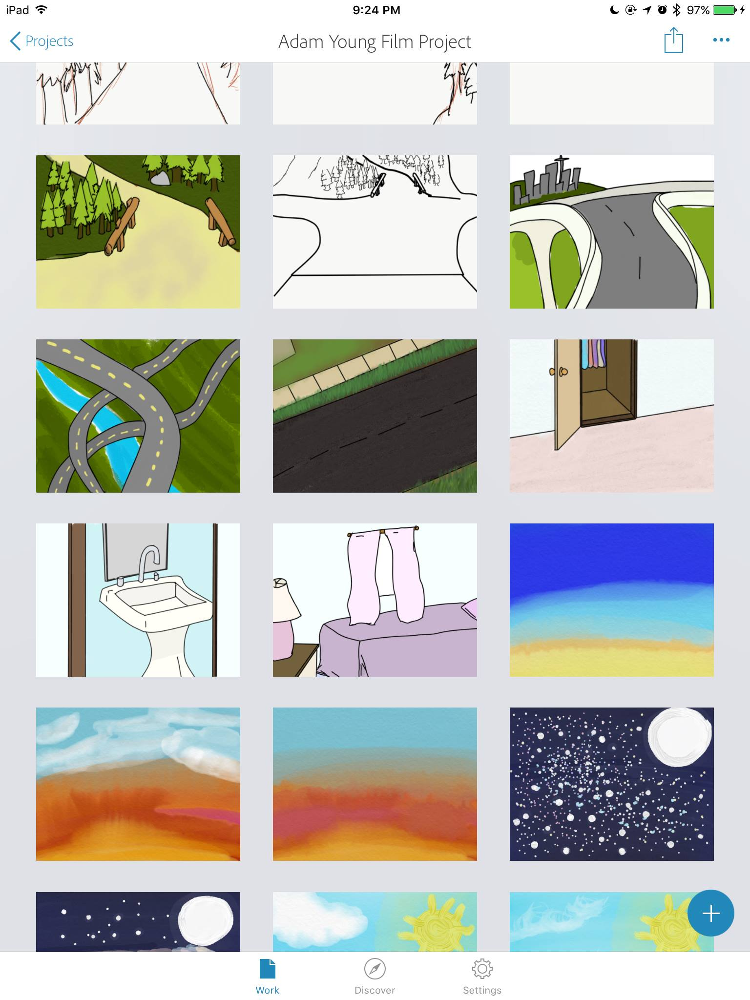

Clover Ross is my name, and I am a digital storyteller who
utilizes web programming, animation, and videography in my
art works. My projects highlight the importance of morality,
the relevance of philosophy, and the impact of cultural
appropriation. By exploring these concepts through interactive
gameplay, I invite the audience to physically and
independently explore topics. Many of my projects are also
based in fantasy imaginary worlds which she created. I am
currently employed as a game designer for the SISLT
department, with the MHS program.

While still attending the University of Missouri, I have been
working on game projects independently, as well as many of
my own animated film projects. I also create illustrations that
reflect my thoughts and the lore of her fantasy world. I have
taken the ISLT 4360 class that preceded this one, (in fact, I
just recycled the github from that class to use for this one),
and have taught myself the beginning of a number of different
languages. I hope to become more proficient with this, so
much that I can make any website with confidence.
"Page created by "Clover Ross
Last updated on Aug 2017